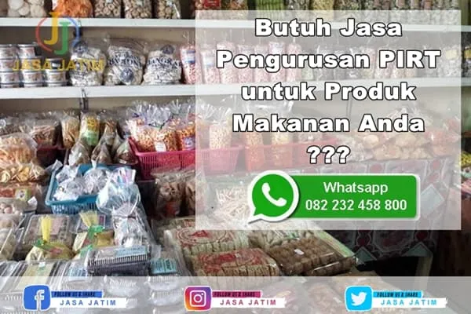

Jasa Pengurusan PIRT

Jasa Pengurusan PIRT: Solusi Terbaik untuk Bisnis Makanan dan Minuman
Pada era digital yang semakin maju seperti sekarang ini, kehadiran sebuah bisnis makanan dan minuman tidak lagi hanya mengandalkan kualitas produk yang disajikan, tetapi juga perlu memperhatikan aspek legalitas. Salah satu legalitas yang perlu diperhatikan adalah Perizinan Industri Rumah Tangga (PIRT). PIRT adalah izin resmi yang diberikan oleh pemerintah kepada produsen makanan dan minuman untuk memastikan bahwa produk yang dihasilkan memenuhi standar keamanan dan kebersihan. Di sinilah pentingnya jasa pengurusan PIRT sebagai solusi terbaik bagi para pelaku bisnis makanan dan minuman.
Apa itu Jasa Pengurusan PIRT?
Jasa pengurusan PIRT adalah layanan profesional yang ditawarkan oleh perusahaan konsultan atau agen yang berpengalaman dalam membantu pelaku bisnis makanan dan minuman untuk mendapatkan izin PIRT secara lengkap dan sesuai dengan peraturan yang berlaku. Dalam proses pengurusan PIRT, jasa ini akan memberikan bantuan dalam mengurus dokumen-dokumen yang diperlukan, mengoordinasikan dengan instansi terkait, serta memberikan konsultasi mengenai standar keamanan dan kebersihan yang harus dipenuhi.
Manfaat Menggunakan Jasa Pengurusan PIRT
- Profesionalitas dalam Pengurusan PIRT
- Menghemat Waktu dan Energi
- Keamanan dan Kepatuhan Hukum
- Reputasi Bisnis yang Lebih Baik
- Dukungan Penuh dari Awal hingga Akhir
Mengurus izin PIRT tidaklah mudah. Prosesnya membutuhkan pemahaman yang mendalam mengenai regulasi yang berlaku, persyaratan dokumen yang harus dipenuhi, serta hubungan dengan instansi pemerintah terkait. Dengan menggunakan jasa pengurusan PIRT, Anda akan dibantu oleh tim yang profesional dan berpengalaman dalam mengurus izin PIRT. Mereka akan memastikan bahwa proses pengurusan berjalan dengan lancar dan memenuhi semua persyaratan yang ditetapkan.
Mengurus izin PIRT membutuhkan waktu dan upaya yang cukup banyak. Ada banyak dokumen yang perlu dipersiapkan, formulir yang harus diisi, dan proses administratif yang harus diselesaikan. Dengan menggunakan jasa pengurusan PIRT, Anda dapat menghemat waktu dan energi Anda. Tim profesional akan mengurus semua proses tersebut sehingga Anda dapat fokus pada kegiatan bisnis inti Anda.
PIRT adalah perizinan yang berkaitan dengan keamanan dan kebersihan produk makanan dan minuman. Dalam pengurusan PIRT, tim profesional akan memberikan konsultasi mengenai standar keamanan dan kebersihan yang harus dipenuhi. Dengan menggunakan jasa ini, Anda dapat memastikan bahwa produk Anda memenuhi standar yang ditetapkan oleh pemerintah, sehingga bisnis Anda beroperasi dengan aman dan mematuhi hukum yang berlaku.
Dengan memiliki izin PIRT yang sah, bisnis Anda akan mendapatkan reputasi yang lebih baik di mata konsumen. Izin PIRT menjadi bukti bahwa produk yang Anda jual telah melewati proses pengawasan dan memenuhi standar keamanan dan kebersihan. Hal ini dapat meningkatkan kepercayaan konsumen terhadap produk Anda dan memperluas peluang pasar.
Tim pengurusan PIRT akan memberikan dukungan penuh dari awal hingga akhir proses pengurusan izin. Mereka akan membantu dalam mengisi formulir, mengumpulkan dan menyiapkan dokumen-dokumen yang diperlukan, serta mengurus proses administratif hingga izin diterbitkan. Anda dapat mengandalkan mereka sebagai mitra yang akan membantu Anda melalui seluruh proses tersebut.
Kesimpulan
Mengurus izin PIRT merupakan langkah penting dalam menjalankan bisnis makanan dan minuman. Dengan menggunakan jasa pengurusan PIRT, Anda akan mendapatkan keuntungan dalam hal profesionalitas, waktu dan energi, keamanan dan kepatuhan hukum, reputasi bisnis yang lebih baik, serta dukungan penuh dari tim yang berpengalaman. Jadi, jangan ragu untuk memanfaatkan jasa ini sebagai solusi terbaik bagi bisnis Anda. Dapatkan izin PIRT dengan mudah dan aman, serta pastikan produk makanan dan minuman Anda memenuhi standar yang ditetapkan.